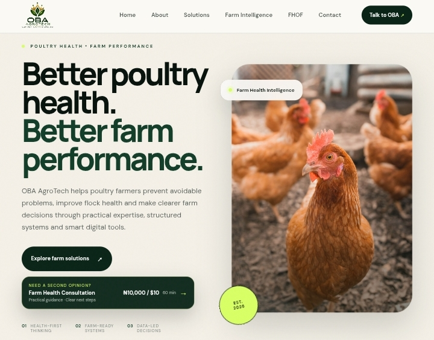
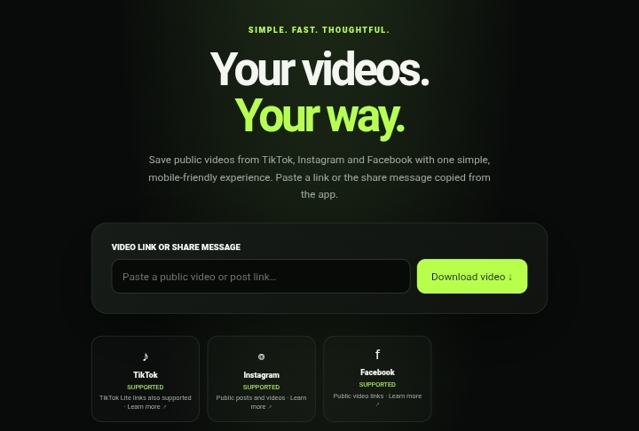

BRAND · DIGITAL EXPERIENCE
Zin Luxe
A visual brand experience. Project details and a verified live destination will be added when available.
Project previewOBA DIGITAL STUDIO / PROJECTS
A look at digital products, platforms and experiments built across different problem spaces. These are real projects — not invented client case studies.
SELECTED PROJECTS
Each project starts with a problem to solve. Explore the live product where it is available, or open the project repository for work still being documented.

A digital home for practical poultry-farming tools, guidance and farm-focused resources.
Explore live project ↗
An AI-assisted trading research and paper-trading platform built around analysis and risk awareness.
Explore live project ↗
A multi-platform media downloader designed to make saving supported public content straightforward.
Explore live project ↗
A poultry farm-management experience for tracking flock performance and daily operations.
Explore OBA AgroTech ↗
A faith-oriented digital experience built to make beneficial learning and resources easier to access.
View project repository ↗A visual brand experience. Project details and a verified live destination will be added when available.
Project previewProject screenshots are provided as previews. Availability and features may evolve as products are developed.
YOUR IDEA NEXT
Let's explore what a practical digital solution could look like.